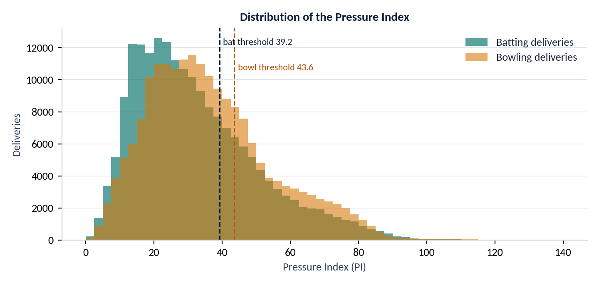
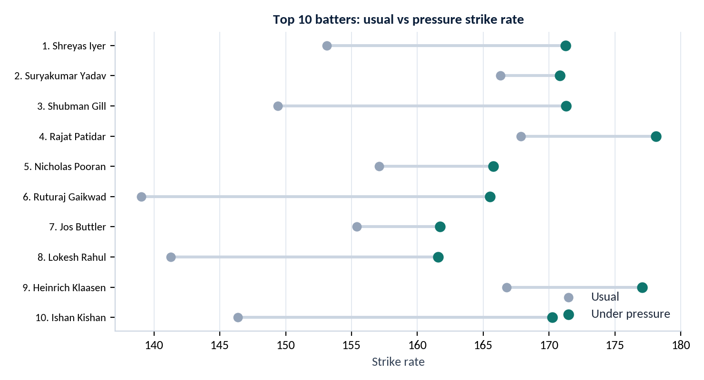
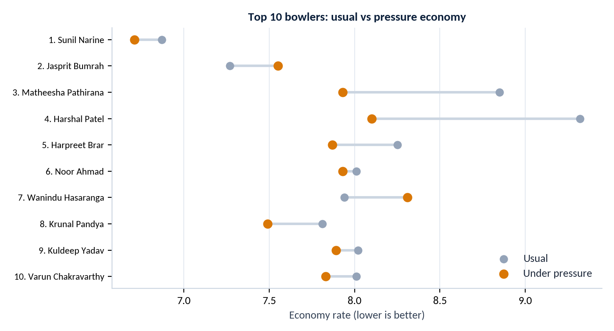
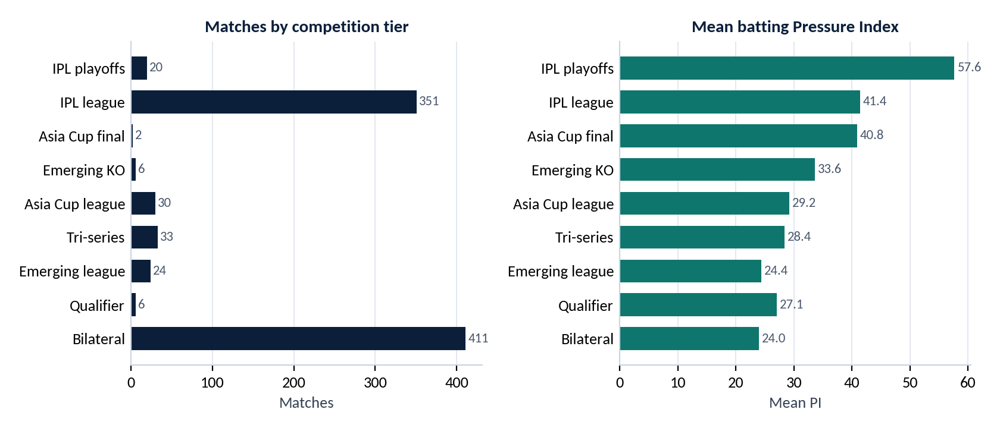

A reproducible ranking of the batters and bowlers who deliver when the match is on the line — built from 883 matches and 200,961 deliveries.
883 matches |
200,961 deliveries |
44 + 42 eligible players |
85 / 15 level / improvement |
| 01 | 1. Executive summary The headline top 10s and the three inputs to the Pressure Index. | 3 |
| 02 | 2. What the data contains Coverage, competition mix, and the deliberate treatment of the Asia Cup. | 4 |
| 03 | 3. Defining pressure Stakes, opponent strength, win probability, and the gated leverage formula. | 5 |
| 04 | 4. Measuring performance Baselines, per-ball impact, sample shrinkage, consistency, and eligibility. | 8 |
| 05 | 5. Results The final batting and bowling lists, with the evidence behind each selection. | 11 |
| 06 | 6. Reliability and sensitivity Consistency checks, robustness to modelling choices, and tier evidence. | 14 |
| 07 | 7. Limitations What the model does not capture, and how to read the uncertainty. | 16 |
| 08 | 8. Reproducibility Commands, outputs, and the full configuration used for the submission. | 17 |
Pressure Index Stakes × opponent × leverage A calibrated win-probability model turns match state into a per-delivery pressure weight. |
Level-weighted score 85% par · 15% own Most of the judgement is against the situation; a smaller term rewards improvement on the player's own level. |
Sample guard 400 balls · K = 600 Eligibility floor, shrinkage and a consistency adjustment stop short hot streaks from topping the lists. |
outputs/ball_pressure.csv.We build a Pressure Index (PI) for every delivery from three ingredients:
Each player's output in the top 30% highest-pressure deliveries — with a soft ramp around the cutoff — is then measured against a level-weighted expectation: 85% the neutral situation par and 15% the player's own usual level. The score is weighted by PI, shrunk for sample size and adjusted for how often the player delivered a positive pressure innings. Putting most of the weight on situation par means an elite player is judged mainly against the difficulty of the situation rather than only against their own high bar, while the 15% own-baseline term still rewards genuine improvement. The final lists are in Sections 5.1 and 5.2.
Headline result. Shreyas Iyer and Sunil Narine lead the batting and bowling lists. The ranking is 85% a level test against situation par and 15% an improvement test against the player's own baseline, with a 400-ball floor and sample-size shrinkage.
Headline selections
| Rank | Batter | Score | Bowler | Score |
|---|---|---|---|---|
| 1 | Shreyas Iyer | +0.333 | Sunil Narine | +0.196 |
| 2 | Suryakumar Yadav | +0.330 | Jasprit Bumrah | +0.170 |
| 3 | Shubman Gill | +0.329 | Matheesha Pathirana | +0.165 |
| 4 | Rajat Patidar | +0.318 | Harshal Patel | +0.163 |
| 5 | Nicholas Pooran | +0.286 | Harpreet Brar | +0.136 |
The full top 10s, with pressure strike rates, economies, sample sizes and consistency, are in Sections 5.1 and 5.2.
| File | Use |
|---|---|
ball_by_ball.csv |
Delivery-level outcome, batter, bowler, extras, dismissal |
matches.csv |
Competition, date, venue, teams, result, revised targets/overs |
competitions.csv |
Competition name, format and season |
teams.csv |
Team names |
playing_eleven.csv, competition_team_player_mapping.csv |
Player/team context (not needed for the core ratings) |
Coverage by season. The pack spans five calendar years and two formats. Every delivery is used, including those outside the pressure set, because the own-baseline and situation-par estimates need the full population.
| Season | Matches | Deliveries |
|---|---|---|
| 2022 | 168 | 39,627 |
| 2022/23 | 12 | 2,838 |
| 2023 | 137 | 32,249 |
| 2023/24 | 3 | 739 |
| 2024 | 198 | 44,289 |
| 2024/25 | 3 | 754 |
| 2025 | 216 | 47,383 |
| 2026 | 146 | 33,082 |
The pack contains no ICC Men's T20 World Cup. The senior multi-nation tournament present is the Asia Cup (2022 and 2025); the development equivalents are the Emerging Teams Asia Cup 2024 and Asia Cup Rising Stars 2025. Because the pack has no World Cup, and because the Asia Cup is not given World-Cup-level weight in this submission, all Asia Cup events sit below IPL league level in the stakes ladder. The requested ordering is therefore preserved where the data allows it: bilateral < IPL league < IPL playoffs, with the Asia Cup final above bilateral cricket but below an IPL league match.
Every match is assigned a tier from its competition name and stage:
| Tier | Weight | Examples in the pack |
|---|---|---|
| Bilateral T20I | 0.6 | England in Pakistan T20I Series |
| Qualifier | 0.6 | Asia Cup T20 Qualifiers |
| Emerging league | 0.6 | Emerging Teams Asia Cup group |
| Tri-series | 0.7 | New Zealand T20I Tri Series |
| Asia Cup league | 0.7 | Asia Cup group / Super 4 |
| Emerging knockout | 0.75 | Emerging Asia Cup semi/final |
| Asia Cup final | 0.85 | Asia Cup final |
| IPL league | 1.0 | IPL 2022–2026 league stage |
| IPL playoff | 1.4 | Qualifier, Eliminator, Final |
This reproduces the requested ordering: bilateral < IPL league < IPL playoffs. The Asia Cup is not elevated to the missing World Cup rung; its league stage is weighted alongside a tri-series and its final sits above bilateral cricket but below IPL league level. IPL matches therefore carry the highest stakes in the pack, and IPL playoffs carry the highest weight overall.
The pack has no ICC ranking table, so we compute a pre-match Elo rating for every team from the results in the same data, separately for the IPL and international pools. The opponent's pre-match Elo is converted to a 0–1 strength and mapped to a multiplier:
O = 0.80 + 0.40 * strength(opponent Elo)
so a player faces at most a ±20% stakes adjustment for opponent quality. Elo is updated after each match (K = 24.0, home advantage = 20.0 Elo points). Using a dynamic Elo rather than a single static ranking snapshot is deliberate: it tracks form and opponent strength at the time of the match, and it is fully reproducible from the supplied data.
An earlier version of this model measured closeness with hand-set run-rate terms. That has a known failure mode: in a chase that is already won (20 needed off 30 with eight wickets in hand) the batting side is “ahead of par”, so a naive mirror-image formula calls it high bowling pressure, while a genuine death-over squeeze (45 off 18 with four wickets) can score low. We therefore replace the hand-set closeness terms with a win-probability model fitted on the supplied ball-by-ball data.
For every delivery, before the ball is bowled, we form a small state vector:
adv — the projected final score minus the target (2nd innings) or the venue par score
(1st innings), divided by 20;lost — wickets already lost, divided by 10;elapsed — legal balls bowled divided by the innings length;elo_diff — the batting team's pre-match Elo minus the bowling team's, divided by 400;adv * elapsed and a constant.A separate logistic model is fitted for each innings (p = sigmoid(w · x)), with the label
“did the batting team win?” and L2 regularisation. The fitted coefficients are:
| Innings | adv | lost | adv × elapsed | Elo diff | constant |
|---|---|---|---|---|---|
| First | +0.64 | -0.70 | -0.06 | +1.64 | +0.35 |
| Second | +0.62 | -1.25 | +1.81 | +0.78 | +0.63 |
The model is used only to order situations by leverage, not as a claim that a player caused
a win-probability change. Leverage is the classic 4p(1-p) term, which is 1 when the game is a
coin-flip and 0 when it is decided. We damp it early in the innings, when every game is still
nominally close but little has been decided:
p = sigmoid(w · x)
tension = 4 * p * (1 - p) * (0.4 + (1 - 0.4) * elapsed)
The two roles then get a different resources term, and — importantly — that term is gated by tension:
wk_bat = clip(wickets_lost / 9, 0, 1) # a batter is under pressure when wickets fall
wk_bowl = clip(wickets_left / 10, 0, 1) # a bowler is under pressure when wickets remain
P_bat = tension * (0.5 + 0.25 * wk_bat) + 0.25 * elapsed
P_bowl = tension * (0.5 + 0.25 * wk_bowl) + 0.25 * elapsed
Gating the resources term is what removes the dead-game distortion completely. Wickets only
create pressure while the match is alive: once p has collapsed, tension goes to zero and
the resource term vanishes with it. The only term that survives a decided game is the small
late-innings term, which is why such deliveries fall below the pressure threshold instead of
inflating a bowler's tally.
Two worked chases (target 160, par 8.5) show the effect. A cakewalk — 20 needed off 30 with
eight wickets in hand — has p ≈ 0.93, tension ≈ 0.22, and scores PI_bowl ≈ 34. A
genuine squeeze — 45 needed off 18 with four wickets — has p ≈ 0.10, tension ≈ 0.32, and
scores PI_bowl ≈ 41. The tight chase now ranks higher for the bowler, which is the correct
ordering. A knife-edge game (p ≈ 0.50) has tension ≈ 1.00 and dominates both. Runs left,
balls left and wickets remaining all still enter through the win-probability model and the
elapsed / resources terms, so the brief's situational inputs remain explicit.
The situation a player walks into matters. For every innings we record the PI of the first ball faced by the batter and the first ball bowled by the bowler. Each pressure delivery weight is multiplied by
1 + 0.15 * entry_PI / 100
so a player who enters at 20/3 in the fifth over, or comes on in the death overs of a tight chase, carries a modest additional weight through that innings. This directly implements the “when the batter came in / when the bowler came on” requirement.
The per-delivery index is
PI = 100 * S * O * P
PI is unbounded above; the observed range is about 0–137. A delivery is core pressure if it is in the top 30% of PI for that role (70th percentile). In this dataset the thresholds are:
| Role | 70th-percentile threshold | Pressure deliveries |
|---|---|---|
| Batting | 39.2 | 57,978 of 193,250 balls faced |
| Bowling | 43.6 | 57,733 of 192,411 legal balls |

The percentile threshold defines the core pressure set, but the score does not use a hard cutoff: Section 4.4 describes the soft logistic ramp that lets deliveries just below the threshold contribute partial weight. Section 6 shows how sensitive the lists are to moving the threshold.
For each player we compute two expectations:
| Phase | Batting runs/ball | Batting wicket rate | Bowling runs/ball | Bowling wicket rate |
|---|---|---|---|---|
| Powerplay | 1.3552 | 0.0453 | 1.3550 | 0.0447 |
| Middle | 1.3258 | 0.0478 | 1.3257 | 0.0472 |
| Death | 1.5964 | 0.0824 | 1.5955 | 0.0781 |
The blended baseline used in the rating is
base = 0.85 * situation_par + (1 - 0.85) * own_baseline
With α = 0.85, this is 85% situation par and 15% own baseline. For
batting, the per-ball impact can be written as
impact = 0.85 * (actual - par) + (1 - 0.85) * (actual - own)
and for bowling the signs reverse:
impact = 0.85 * (par - conceded) + (1 - 0.85) * (own - conceded)
So 85% of the judgement is the level test — did the player beat what a typical player would be expected to do in that exact situation? — and 15% is the improvement test — did the player beat their own usual level? Under the old 50/50 blend the own baseline carried half the weight, which let a modest relative improver outrank an elite player who merely maintained an already high level. At 85/15 the level test has clear precedence, while the own-baseline term stays large enough that a player far above their own history still gains. Setting the weight to 1.0 would drop the own baseline entirely and make the score pure performance against situation par; 0.85 deliberately keeps a 15% improvement signal.
For every pressure ball faced:
impact_i = (runs_off_bat - base_runs_per_ball) - wv_i * (out - base_wicket_rate)
The wicket value is no longer a flat 5 runs. It varies with the phase, the dismissed batter's position in the order, and how set that batter is:
wv_i = 5.0 * order_mult * phase_mult * (1 + 0.4 * clip(batter_runs / 30, 0, 1))
order_mult runs from 1.60 for an opener to 0.20 for a No. 11; phase_mult is
1.2 in the powerplay, 1.0 in the middle and 1.05
at the death. Across the pack the average wicket value is about 7.5 runs, but the spread is
wide: a top-order powerplay wicket is worth roughly 10–13 runs, while a tailender dismissed in
the 20th over is worth roughly 1.5–3. This stops the model treating a wicket at 20/3 and a
wicket at 180/8 as the same event. The per-ball impacts are weighted by PI and the entry
factor.
For every pressure legal ball:
impact_i = (base_runs_per_ball - runs_conceded) + wv_i * (wicket - base_wicket_rate)
A bowler is rewarded for conceding fewer runs than expected and for taking wickets above expectation. The same per-ball wicket value applies to the bowling side: taking the wicket of a set top-order batter is worth more than taking a tailender's. Byes and leg-byes are excluded from runs conceded; wides and no-balls are included; wides and no-balls do not count as legal balls.
The score does not use a hard in/out cutoff. A delivery just below the 70th percentile is not obviously less pressure than one just above it, so each delivery receives a soft weight:
soft_i = sigmoid((PI_i - threshold) / tau)
w_i = PI_i * soft_i * (1 + 0.15 * entry_PI / 100)
with tau = 0.1 * threshold (about 3.9 batting and
4.4 bowling PI points).
Deliveries down to threshold - 2*tau are included with a small weight; below that they are
dropped. The core pressure count (used for eligibility and the tables) still counts only
deliveries at or above the 70th percentile, so the soft band cannot be used to manufacture a
qualifying sample.
The raw pressure score is the weighted mean impact:
raw = sum(w_i * impact_i) / sum(w_i)
Small samples are noisy, so the score is shrunk towards zero:
ppi = raw * sum(w_i) / (sum(w_i) + 600.0)
With K = 600, a player with 400 core pressure balls keeps about
400 / (400 + 600) ≈ 0.40 of the raw impact, while
one with 900 keeps 0.60. Combined with the 400-ball eligibility
floor below, this prevents a short hot streak from topping a list. The full rankings also
report the standard error, effective_balls and reliability as diagnostics.
Finally, we measure consistency: the share of a player's pressure innings (minimum 6 pressure balls) in which the player's impact was positive. The final score is
final = ppi * (1 - 0.2 + 0.2 * consistency)
so a player who repeatedly delivers in pressure innings is preferred to one with the same average but a boom-or-bust record.
| Rule | Batters | Bowlers |
|---|---|---|
| Minimum total balls | 400 | 400 |
| Minimum pressure balls | 400 | 400 |
| Minimum pressure innings | 5 | 5 |
These thresholds leave 44 eligible batters and 42 eligible bowlers. They deliberately exclude short cameos: a player must have faced at least 400 core pressure deliveries (or bowled 400) to enter a list. This floor removes thin but eye-catching records. With the floor switched off, Vaibhav Sooryavanshi (93 pressure balls) would top the batting list, followed by Najibullah Zadran (102) and Rilee Rossouw (120); Quinton de Kock (268) would sit seventh. On the bowling side Dushan Hemantha (57) and Hasan Mahmud (57) would lead. None of these is a fair comparison with a 700-ball body of work, so the floor excludes them. Every player in the final top 10 has at least 424 pressure balls, so all clear the floor comfortably.
Per the submission instruction, players representing Pakistan or Pakistan A (65 players in the pack) are excluded from both rankings. Their deliveries remain in the underlying data only as opposition context; no Pakistani player can appear in either top 10.
| Rank | Player | Team | Pressure balls | SR usual | SR pressure | SR par | Final score | Consistency |
|---|---|---|---|---|---|---|---|---|
| 1 | Shreyas Iyer | India | 696 | 153.14 | 171.26 | 150.15 | +0.333 | 0.511 |
| 2 | Suryakumar Yadav | India | 881 | 166.29 | 170.83 | 144.75 | +0.330 | 0.627 |
| 3 | Shubman Gill | Gujarat Titans | 756 | 149.39 | 171.3 | 147.99 | +0.329 | 0.435 |
| 4 | Rajat Patidar | Royal Challengers Bengaluru | 557 | 167.86 | 178.1 | 148.75 | +0.318 | 0.533 |
| 5 | Nicholas Pooran | Lucknow Super Giants | 815 | 157.1 | 165.77 | 148.94 | +0.286 | 0.534 |
| 6 | Ruturaj Gaikwad | Chennai Super Kings | 464 | 139.02 | 165.52 | 139.58 | +0.278 | 0.486 |
| 7 | Jos Buttler | Rajasthan Royals | 781 | 155.39 | 161.72 | 150.62 | +0.276 | 0.5 |
| 8 | Lokesh Rahul | Lucknow Super Giants | 781 | 141.29 | 161.59 | 145.98 | +0.272 | 0.486 |
| 9 | Heinrich Klaasen | Sunrisers Hyderabad | 933 | 166.76 | 177.06 | 154.85 | +0.224 | 0.585 |
| 10 | Ishan Kishan | India | 524 | 146.37 | 170.23 | 144.65 | +0.221 | 0.405 |

| Rank | Player | Team | Pressure balls | Econ usual | Econ pressure | Econ par | Wkts | Final score | Consistency |
|---|---|---|---|---|---|---|---|---|---|
| 1 | Sunil Narine | Kolkata Knight Riders | 1006 | 6.87 | 6.71 | 8.66 | 48 | +0.196 | 0.621 |
| 2 | Jasprit Bumrah | Mumbai Indians | 677 | 7.27 | 7.55 | 9.27 | 36 | +0.170 | 0.509 |
| 3 | Matheesha Pathirana | Chennai Super Kings | 573 | 8.85 | 7.93 | 9.15 | 41 | +0.165 | 0.538 |
| 4 | Harshal Patel | Royal Challengers Bengaluru | 896 | 9.32 | 8.1 | 9.29 | 59 | +0.163 | 0.525 |
| 5 | Harpreet Brar | Punjab Kings | 424 | 8.25 | 7.87 | 8.76 | 22 | +0.136 | 0.484 |
| 6 | Noor Ahmad | Chennai Super Kings | 784 | 8.01 | 7.93 | 8.55 | 44 | +0.128 | 0.543 |
| 7 | Wanindu Hasaranga | Sri Lanka | 688 | 7.94 | 8.31 | 8.54 | 43 | +0.127 | 0.475 |
| 8 | Krunal Pandya | Lucknow Super Giants | 879 | 7.81 | 7.49 | 8.34 | 42 | +0.090 | 0.463 |
| 9 | Kuldeep Yadav | Delhi Capitals | 1135 | 8.02 | 7.89 | 8.65 | 64 | +0.069 | 0.623 |
| 10 | Varun Chakravarthy | Kolkata Knight Riders | 972 | 8.01 | 7.83 | 8.7 | 48 | +0.041 | 0.551 |

Consistency check. The consistency column is the fraction of pressure innings with a
positive impact. The top-10 batters range from
0.41 to 0.63;
the top-10 bowlers range from
0.46 to 0.62.
No player reaches the top of a list on one extraordinary innings alone.
Sensitivity. Re-running the pipeline with different modelling choices keeps the leading names but reshuffles the lower half of each top 10 (Jaccard overlap of the top-10 sets against the base run):
| Variant | Batting overlap | Bowling overlap |
|---|---|---|
| Wicket value 2 instead of 5 | 1.00 | 1.00 |
| Wicket value 8 instead of 5 | 0.67 | 0.82 |
| Pressure = top 20% (not 30%) | 0.54 | 0.82 |
| Pressure = top 40% (not 30%) | 0.82 | 0.54 |
| Absolute weight 0.70 (not 0.85) | 0.82 | 0.82 |
| Absolute weight 1.00 (not 0.85) | 0.82 | 1.00 |
| Soft ramp tau 0.05 (not 0.10) | 1.00 | 1.00 |
| Soft ramp tau 0.20 (not 0.10) | 1.00 | 0.82 |
The lists are stable in composition at the top and more volatile in the lower half. Halving the wicket value reproduces both top-10 sets exactly (the order changes); doubling it changes two batting names and one bowling name, because it rewards wicket-taking over economy. Moving the level/improvement blend to 0.70 or 1.00 keeps the same leading group and changes at most two names, which is the expected behaviour: the blend changes the order and the back half, not the identity of the best pressure players. The soft-ramp variants reproduce almost all of the base list. The biggest movement comes from moving the pressure threshold to the top 20% or top 40%, which changes what counts as pressure at all; even there the overlap is 0.54–0.82 rather than the 0.25 seen before the soft ramp. The lower half of each list should therefore be read as a shortlist rather than a precise ordering.
Robustness. The leading group is stable across every variant. The biggest movement comes from changing what counts as pressure, not from the level/improvement weight.
Pressure is not spread evenly across the calendar, and the tier weights show up in the data before any player is scored. The mean PI rises from bilateral cricket to the IPL playoffs, and the share of deliveries above the pressure threshold rises with it.
| Tier | Matches | Batting balls | Mean batting PI | Mean bowling PI | Pressure share |
|---|---|---|---|---|---|
| Bilateral | 411 | 86,477 | 24.0 | 26.6 | 10% |
| Qualifier | 6 | 1,334 | 27.1 | 30.1 | 14% |
| Emerging league | 24 | 5,325 | 24.4 | 27.1 | 13% |
| Tri-series | 33 | 7,328 | 28.4 | 32.1 | 21% |
| Asia Cup league | 30 | 6,780 | 29.2 | 32.9 | 24% |
| Emerging KO | 6 | 1,410 | 33.6 | 35.9 | 37% |
| Asia Cup final | 2 | 475 | 40.8 | 45.2 | 47% |
| IPL league | 351 | 79,628 | 41.4 | 46.9 | 51% |
| IPL playoffs | 20 | 4,493 | 57.6 | 65.2 | 75% |

The table is the ladder made visible. IPL playoffs carry a mean batting PI of 57.6 and place 75% of deliveries above the pressure threshold, against 41.4 and 51% in IPL league matches and 24.0 and 10% in bilateral cricket. The Asia Cup final (40.8 batting, 45.2 bowling) lands just below the IPL league, exactly where the de-weighted ladder places it: above bilateral cricket, but not promoted to a World Cup stand-in. The same ordering holds for bowling, where the playoff mean is 65.2 against 46.9 in the league stage.
Two consequences follow. The ladder is doing real work: the gaps are wide enough to survive the win-probability and opponent adjustments. But because the IPL supplies 371 of the 883 matches, most of the high-pressure sample is IPL cricket. That is a property of the data pack, not a thumb on the scale, but the lists are IPL-weighted evidence rather than a balanced global sample.
pipeline.py.outputs/config.json. The score is measured against a level-weighted
expectation (85% situation par, 15% the player's own baseline), so it is not a pure level
ranking: 15% of the weight still rewards improvement on the player's own history, and a
large relative jump can therefore move a player above a more established name. The
impact_runs and impact_wickets columns make that trade-off visible for every player,
and Section 6 shows how the lists respond when the weight is moved to 0.70 or 1.00.pressure_balls, effective_balls and consistency columns should be
read alongside the rank.matches.csv (the *_revised_overs fields store balls, not overs; this was verified
against the delivery counts). Super overs are excluded.python3 pipeline.py # builds ratings and top-10 files
python3 sensitivity.py # runs the sensitivity variants
python3 make_report.py # builds charts and this report
| Output | Contents |
|---|---|
outputs/top10_batters.csv |
Final top 10 batters |
outputs/top10_bowlers.csv |
Final top 10 bowlers |
outputs/player_pressure_ratings_bat.csv |
Full eligible batting rankings |
outputs/player_pressure_ratings_bowl.csv |
Full eligible bowling rankings |
outputs/ball_pressure.csv |
Per-delivery PI and outcome (audit trail) |
outputs/summary.json |
Thresholds, phase par, tier counts and full config |
All parameters live in the CFG dictionary at the top of pipeline.py; outputs/config.json
records the exact values used for the submitted lists.